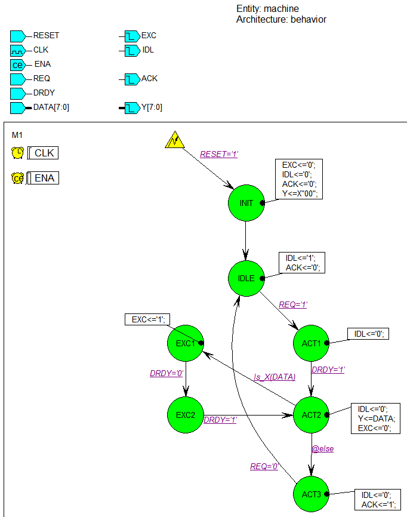

PSL Assertions Embedded in VHDL State Machine Code
This sample design shows variety of
assertions and covers testing the
VHDL state machine design performance.
Design Files
- readme.html - this file
- machine.asf - state diagram of the transmission controller design
- machine_TB.vhd - testbench for the design
- run_all.do, run_debug.do - scripts for compiling and running simulation
Design Description
The design described by the diagram shown below receives 8-bit data via
DATA input and sends it out (after validity check) to the Y output.
The machine is ready to accept data when IDL line is high. The machine
responds to attention request (REQ input going high) by lowering IDL
and listening to the data ready (DRDY) input: when DRDY goes high the
analysis of data begins.
If the received data is valid, the machine sends it out, sets acknowledge
line (ACK output) to high for one clock cycle and returns to idle state.
If the received data is invalid, the machine enters exception handling
procedure by activating EXC output, waiting for end of current transfer
(DRDY low) and then repeated transfer of data (DRDY high).

To better use Active-HDL features, PSL properties, asserts and covers are added directly to the FSM diagram and later automatically embedded in the Verilog code generated from the diagram.
First part of PSL code is added as Diagram Actions,
the second part as Machine Comment.
Tested properties
- RESET and ENA should never be active simultaneously (for
ASSERT).
- Activation of REQ should be eventually followed by
its deactivation (for ASSERT).
- Activation of REQ should be followed by activation of ACK
within 6 cycles (for ASSERT).
- There should be activation of exception handling (for
COVER).
- There should be completion of exception handling (for
COVER).
- The sequence of states init->idle->act1->act2->act3->idle
should be executed with at most 2 cycle delays (for COVER).
- The sequence of states init->idle->act1->act2->act3->idle
should be executed with at most 4 cycle delays (for COVER).
PSL implementation
This section presents pure PSL implementation of the properties,
asserts and covers; please note that in the VHDL code generated from
the diagram all PSL statement lines are preceded with '--psl' prefix.
-- ASSERT directive using unclocked property (clock with period equal
simulation resolution will be used);
-- error message will be displayed when RESET and ENA are active at the
same time.
rst_check: assert
(never
((RESET='1') and
(ENA='1'))) report
"Simultaneous RESET and ENABLE!";
-- CLOCKED PROPERTY defined: REQ
should eventually be deactivated after each activation;
property
req_nreq is always
((REQ='1')-> eventually!
(REQ='0'))@rising_edge(CLK);
-- Previously defined property used
in ASSERT directive;
-- failure of the property will trigger the error message
assert
(req_nreq) report
"REQ signal not deactivated!";
-- CLOCKED PROPERTY defined: ACK
should be activated 1 to 6 cycles after REQ
property
req_ack is always
(rose(REQ)->
next_e![1
to
6] (rose(ACK)))@rising_edge(CLK);
-- Previously defined property used
in ASSERT directive;
-- failure of the property will trigger the error message
assert
(req_ack) report
"No timely ACK after REQ activation";
-- ADVANCED PROPERTIES: we start
with parameterized sequence definition (states changing in the order
--
'init->idle->act1->act2->act3->idle'
with the longest possible number of cycles in one state being 'max');
sequence
std_seq(const
max) is
{(M1=init);(M1=idle)[*1 to
max];(M1=act1)[*1 to
max];(M1=act2);(M1=act3)[*1 to
max];(M1=idle)};
-- NOW we define fast and slow
execution path properties using 'std_seq' sequence;
property
fast_path is
std_seq(2)@falling_edge(CLK);
property
slow_path is
std_seq(4)@falling_edge(CLK);
-- PROPERTIES are now used in COVER
directives; messages are printed when given path is covered:
cover
(fast_path) report
"Fast execution path covered!";
cover
(slow_path) report
"Slow execution path covered!";
-- COVER directive using unnamed
(immediate) property testing exception condition in the machine;
-- transition from ACT2 to EXC1 means that exception condition was
covered and message should be printed
exc_tst: cover
({(M1=ACT2);(M1=EXC1)}@falling_edge(CLK)) report "Exception
condition successfuly tested!";
-- CLOCKED PROPERTY defined: there
should be a transition from EXC2 to ACT2 (exit from an exception)
property
exc_exit is
({(M1=EXC2);(M1=ACT2)}@falling_edge(CLK));
-- Previously defined property used
in COVER Directive;
-- only if property is covered the message will be printed.
cover
(exc_exit) report
"Successful exit from exception condition covered!";
Simulation
Run one of provided scripts to compile the design with its testbench
and simulate:
- run_debug.do compiles
design, sets signal breakpoint on the state register and assertion
breakpoint on req_ack
assertion, then starts simulation; use run button to proceed through
the simulation (divide document area vertically and keep diagram in one
window and waveform in the other).
- run_all.do compiles
design and runs simulation without waveforms or breakpoints, allowing
operator to see different messages reported in the console.